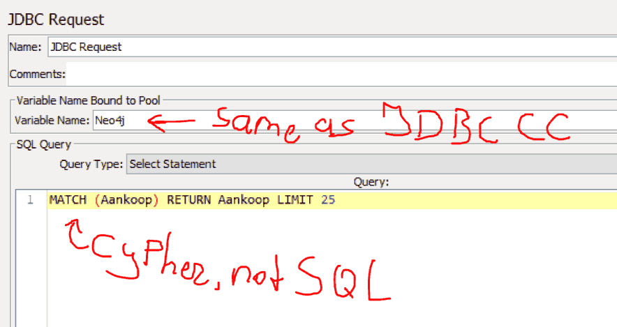
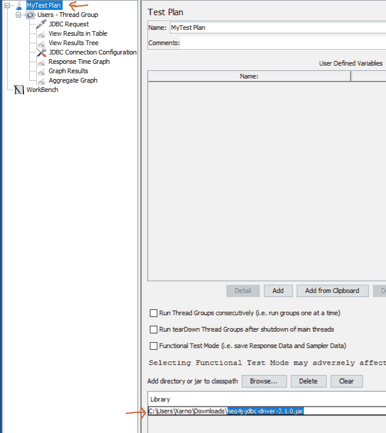
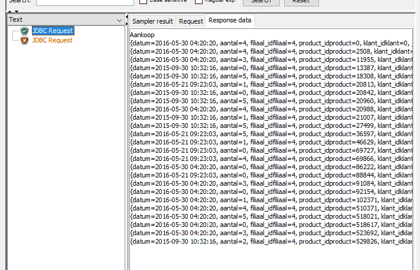

Configuring JMeter for Neo4j
Watch these videos to get a feel for JMeter if you don't know it yet (set speed to 2x and use the arrow keys to skip boring parts). YES, I KNOW IT'S FOR HTTP ONLY! It's just so you get familiar fast with the UI 🙂
Steps to Configure JMeter for Neo4j
- Create a Thread Group
- Create a JDBC Connection Configuration via Add > Config Element
- Create a JDBC Request via Add > Sampler
- Create a View Results Tree (this shows the response data in a tab) via Add > Listener
You should have something like this:

Set the JDBC Connection Configuration:

- jdbc:neo4j:bolt://localhost:7687
- lass: org.neo4j.jdbc.Driver
- neo4j
- neo4j
Set the JDBC Request:
(I can't tell you what to exactly put in the "SQL Query" part, because I don't know your data structures)

Download the JDBC Driver for Neo4j:
Get neo4j-jdbc-driver-3.1.0.jar or a similar version:
Add the JDBC Driver to the Library:
Add the file to the Library in your Test Plan:

Run the Test:
Press the Green Play button to run the test. You should see results. However, note that JMeter may have trouble with setting up multiple connections, which can cause errors (indicated by a red shield with a cross).

This process should not have been this hard to find. It took me 3 frustrating hours to figure this out on my own. I suffered so you don't have to. 😒
Recent changes
-
7c80a18format all files with oxfmt (quite the restructure lmao -
2e1bb7cimprove the JMeter article -
5d8c365add improved titles and descriptions -
c04a46finitial commit